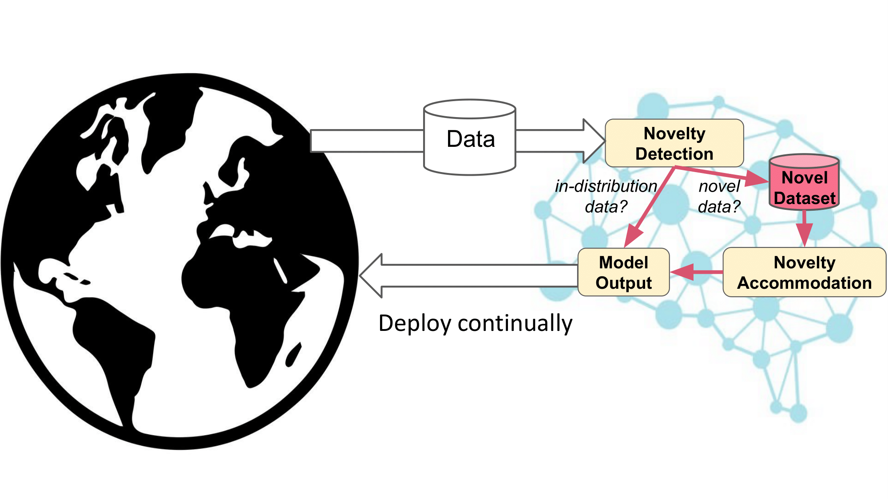
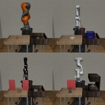

Select Projects
SHELS: Exclusive Feature Sets for Novelty Detection and Continual Learning without Class Boundaries
While deep neural networks (DNNs) have achieved impressive classification performance in closed-world learning scenarios, they typically fail to generalize to unseen categories in dynamic open-world environments, in which the number of concepts is unbounded. In contrast, human and animal learners have the ability to incrementally update their knowledge by recognizing and adapting to novel observations. In particular, humans characterize concepts via exclusive (unique) sets of essential features, which are used for both recognizing known classes and identifying novelty. Inspired by natural learners, we introduce a Sparse High-level-Exclusive, Low-level-Shared feature representation (SHELS) that simultaneously encourages learning exclusive sets of high-level features and essential, shared low-level features. The exclusivity of the high-level features enables the DNN to automatically detect out-of-distribution (OOD) data, while the efficient use of capacity via sparse low-level features permits accommodating new knowledge. The resulting approach uses OOD detection to perform class-incremental continual learning without known class boundaries. We show that using SHELS for novelty detection results in statistically significant improvements over state-of-the-art OOD detection approaches over a variety of benchmark datasets. Further, we demonstrate that the SHELS model mitigates catastrophic forgetting in a class-incremental learning setting, enabling a combined novelty detection and accommodation framework that supports learning in open-world settings
Meghna Gummadi, David Kent, Jorge A. Mendez, Eric Eaton "SHELS: Exclusive Feature Sets for Novelty Detection and Continual Learning without Class Boundaries," Conference on Lifelong Learning Agents (CoLLAs) 2022 paper, recorded presentation
CompoSuite : A Compositional Reinforcement Learning Benchmark
We present CompoSuite, an open-source simulated robotic manipulation benchmark for compositional multi-task reinforcement learning (RL). Each CompoSuite task requires a particular robot arm to manipulate one individual object to achieve a task objective while avoiding an obstacle. This compositional definition of the tasks endows CompoSuite with two remarkable properties. First, varying the robot/object/objective/obstacle elements leads to hundreds of RL tasks, each of which requires a meaningfully different behavior. Second, RL approaches can be evaluated specifically for their ability to learn the compositional structure of the tasks. This latter capability to functionally decompose problems would enable intelligent agents to identify and exploit commonalities between learning tasks to handle large varieties of highly diverse problems. We benchmark existing single-task, multi-task, and compositional learning algorithms on various training settings, and assess their capability to compositionally generalize to unseen tasks. Our evaluation exposes the shortcomings of existing RL approaches with respect to compositionality and opens new avenues for investigation.
Jorge A. Medez, Marcel Hussing, Meghna Gummadi, Eric Eaton. "CompoSuite : A Compositional Reinforcement Learning Benchmark," Conference on Lifelong Learning Agents (CoLLAs) 2022. paper, recorded presentation